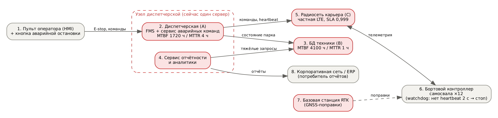
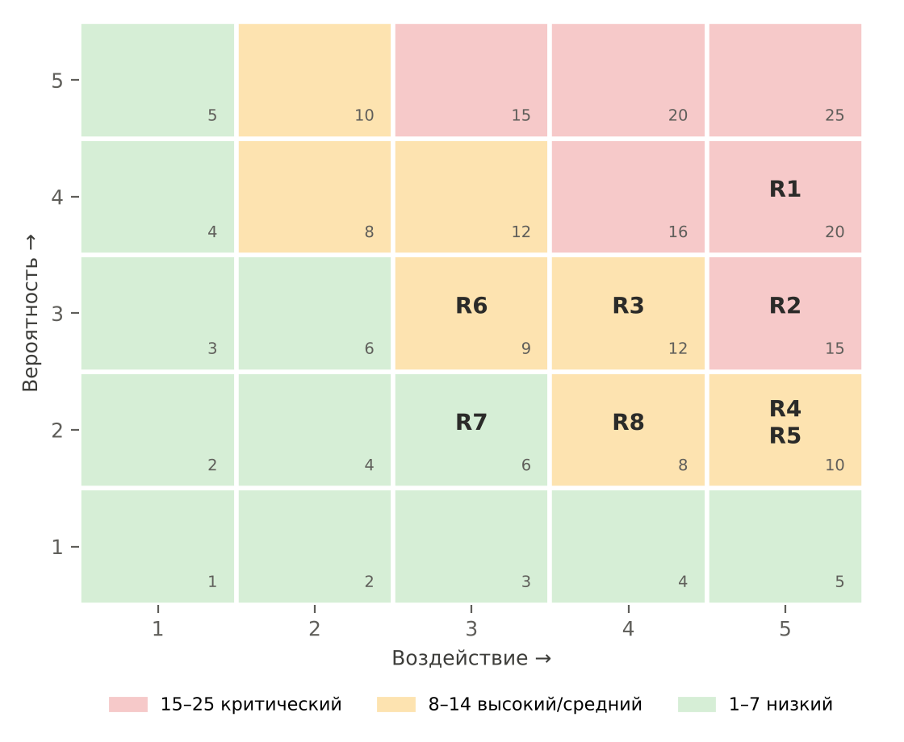
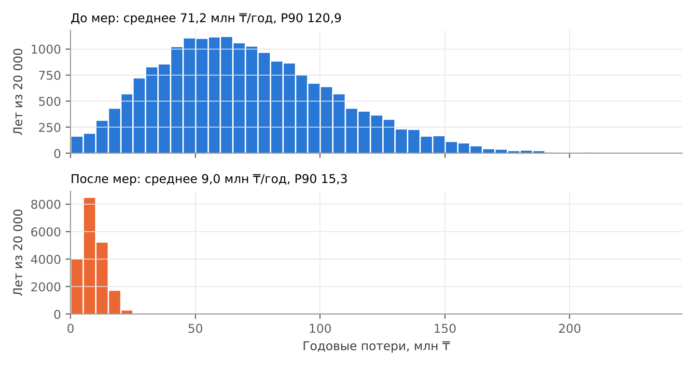
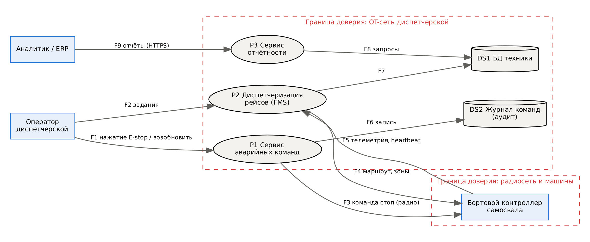
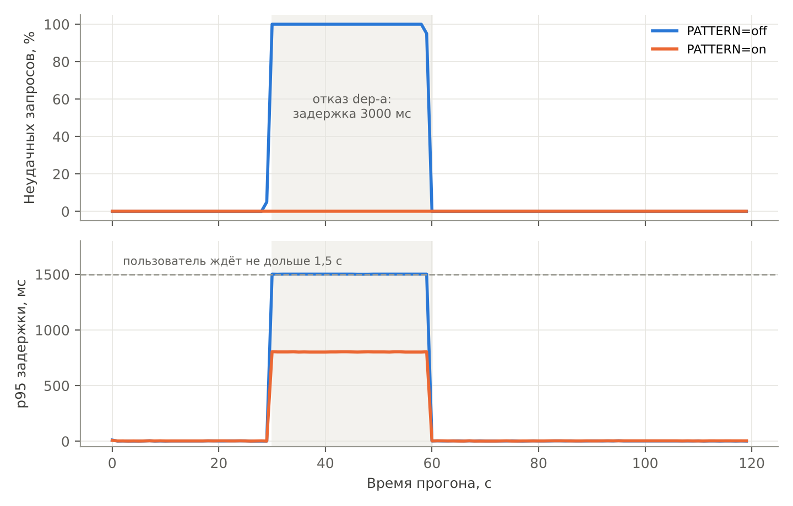

| Студент A — аналитик рисков | {{STUDENT_A}} |
| Студент B — инженер устойчивости | {{STUDENT_B}} |
| Группа / № пары | {{GROUP}} / {{PAIR_NO}} |
| Преподаватель | {{TEACHER}} |
| Репозиторий | {{REPO_URL}} |
Вывод: час простоя стоит около 2,0 млн ₸, но главный ущерб от отказа аварийной остановки — травма или гибель человека под 130-тонной машиной. Поэтому безопасность для людей стоит первой, а доступность — последней.
| Параметр | Описание |
|---|---|
| Система | Система автономной откатки (AHS) открытого карьера: 12 беспилотных самосвалов грузоподъёмностью 130 т, круглосуточная работа в 2 смены (допущение по масштабу, по аналогии с открытыми описаниями систем Komatsu FrontRunner и Caterpillar Command). |
| Миссия | Безопасно перевозить горную массу от экскаваторов к дробилке и отвалам без водителей; при любой опасности — остановить все машины за секунды. |
| Пользователи | Операторы диспетчерской (4 в смене); горный мастер; служба охраны труда и промышленной безопасности; механики; водители вспомогательной техники и пешие работники в зоне карьера (их безопасность — главная цель); руководство и аналитики (отчёты). |
| Ключевые функции | 1) Команда аварийной остановки всех машин (RTO — секунды, RPO = 0); 2) назначение рейсов, маршрутов и разрешений на участки дороги; 3) контроль зон и допуска людей; 4) телеметрия и отчётность по добыче. |
| Свойство | Приоритет | Обоснование |
|---|---|---|
| Безопасность для людей | 1 | Самосвал 130 т на скорости 40 км/ч проходит около 11 м в секунду. Несработавшая аварийная остановка — прямой риск гибели человека. |
| Безотказность | 2 | Аварийная остановка — функция «по требованию»: важна вероятность отказа в момент нажатия (POFOD), а не время работы. |
| Защищённость | 3 | Подделанная команда «возобновить движение» или «маршрут» опасна так же, как отказ: защищённость здесь — часть безопасности. |
| Устойчивость | 4 | При сбое система должна деградировать в безопасное состояние: машины стоят, аварийные команды проходят, отчёты подождут. |
| Доступность | 5 | Недоступность диспетчерской переводит машины в безопасную остановку (watchdog на борту). Это дорого, но не опасно. |
| Статья | Расчёт (допущения) | млн ₸/ч |
|---|---|---|
| Недовывезенная руда | 12 машин × 3 рейса/ч × 130 т = 4680 т горной массы; доля руды 40% → 1872 т; маржинальная прибыль ≈ 800 ₸/т руды | 1,50 |
| Простой экскаваторов и персонала | 3 экскаватора, бригады, топливо на холостом ходу | 0,30 |
| Перезапуск после аварийной остановки | Обход трассы, проверка машин, ≈ 20 мин производства на инцидент, в пересчёте на час простоя | 0,20 |
| Итого | ≈ 2,0 | |
Сравнение с выданной оценкой LM (2 / 5 / 49 млн ₸ за событие). Наиболее вероятные потери 5 млн ₸ соответствуют простою около 2,5 ч, минимум 2 млн ₸ — около 1 ч. Это согласуется с нашей оценкой часа. Максимум 49 млн ₸ одним простоем не объясняется (это 24 ч остановки). Его порождают тяжёлые исходы: столкновение с повреждением машины (ремонт 20–40 млн ₸, допущение), расследование и приостановка работ надзорным органом, травма работника. Длинный «хвост» LM — это и есть цена риска для людей.
Последствия для людей. Если аварийная команда не дошла, пеший работник или лёгкий автомобиль в зоне движения может оказаться под машиной. Если команда опоздала на 1 с, это ≈ 11 м пути до начала торможения. Поэтому ключевое требование — доставка команды за доли секунды и автоматическая остановка машины при потере связи.
| R | Что делаем |
|---|---|
| Recognition | Алерты: память узла > 85% дольше 2 мин; p99 доставки аварийной команды > 500 мс; доля машин без heartbeat > 5% за 30 с. |
| Resistance | Bulkhead: аварийные команды — в своём отсеке потоков и памяти, отчётность — на отдельном узле с жёстким лимитом памяти и низким приоритетом (PriorityClass, oom_score). |
| Recovery | Бортовой watchdog: нет heartbeat 2 с — машина останавливается сама. Горячий резервный узел диспетчерской принимает работу за ≤ 10 с. Аварийные команды идут по резервному каналу. |
| Reinstatement | Возобновление движения — только по подтверждению горного мастера после обхода трассы. Отчётность возвращается последней, с ограничением тяжёлых запросов. Затем разбор без поиска виновных. |
Вывод: в текущей архитектуре шесть единых точек отказа (SPOF). Самая опасная — общий узел диспетчерской, где аварийный сервис делит память с отчётностью. Решение — изоляция (bulkhead), горячий резерв и разнообразие каналов, а не просто вторая копия того же.

Рис. 1. Компоненты системы (8). Красным — единые точки отказа. A, B, C — компоненты из данных варианта.
| SPOF | Решение | Тип |
|---|---|---|
| 2. Диспетчерская (A), один сервер | Второй узел в другом помещении, активный/резервный с ограждением (fencing) и переключением ≤ 10 с; сервис аварийных команд — 4 реплики на двух узлах. | Hot standby, N+1 |
| 4. Отчётность на одном узле с A | Вынести на отдельный узел, жёсткий лимит памяти, низкий приоритет, чтение — только с реплики БД. Это не избыточность, а изоляция отказа. | Bulkhead (изоляция) |
| 3. БД техники (B) | Синхронная реплика с автоматическим переключением ≤ 30 с. Аварийная остановка не читает БД в критическом пути, поэтому достаточно тёплого резерва. | Warm standby |
| 5. Радиосеть карьера (C) | Второй канал другой технологии: узкополосный УКВ-канал аварийной остановки другого производителя; на борту — watchdog. | Разнообразие (diversity) |
| 1. Пульт оператора | Два пульта + аппаратная кнопка, проводом подключённая к передатчику УКВ-канала в обход ПО диспетчерской. | N+1 + diversity |
| 7. Базовая станция RTK | Вторая станция на противоположном борту карьера; при потере поправок машины снижают скорость и встают в безопасной точке. | Warm standby |
В 1996 году основная и резервная инерциальные системы Ariane 5 работали на одинаковом ПО и отказали одинаково — на одном и том же переполнении при преобразовании 64-битного числа в 16-битное. Код был перенесён с Ariane 4 без перепроверки допущений о диапазоне скорости. Горячий резерв защищает от отказа оборудования, но не от общей программной ошибки.
Для нашей системы из этого следуют три решения:
Вывод: два риска в красной зоне — нехватка памяти диспетчерской (R1, 20) и отказ радиосети (R2, 15). Они обрабатываются первыми. Шесть рисков из восьми мы снижаем, один избегаем, один передаём частично, остаточный риск по R1 и R7 принимаем.
| ID | Актив | Угроза | Уязвимость | В | Вз | Риск | Стратегия (Шостак) |
|---|---|---|---|---|---|---|---|
| R1 | Узел диспетчерской (A) | Тяжёлые отчёты исчерпывают память, аварийные команды задерживаются | Отчётность и аварийный сервис на одном узле, нет лимитов | 4 | 5 | 20 | Address: bulkhead, лимиты памяти, вынос отчётности |
| R2 | Радиосеть карьера (C) | Потеря связи, помехи, отказ базовой станции LTE | Один канал одной технологии | 3 | 5 | 15 | Address: второй канал (diversity) + watchdog |
| R3 | Сервер диспетчерской (A) | Аппаратный отказ | Один сервер, MTTR 4 ч | 3 | 4 | 12 | Address: hot standby N+1 |
| R4 | Карта зон и маршрутов | Ошибочное обновление ПО или карты рассылается на все машины | Одновременная выкатка без проверки | 2 | 5 | 10 | Address: canary на 1 машине, автооткат |
| R5 | Канал команд, OT-сеть | Подделка команды «возобновить», шифровальщик | Команды без подписи, OT и IT в одной сети | 2 | 5 | 10 | Address + Transfer: подпись команд, сегментация, киберстрахование |
| R6 | Позиционирование (RTK) | Отказ базовой станции поправок | Одна станция | 3 | 3 | 9 | Address: вторая станция, снижение скорости |
| R7 | БД техники (B) | Отказ диска, порча данных | Нет реплики | 2 | 3 | 6 | Address, затем Accept остатка |
| R8 | Люди в зоне работы | Работник входит в зону без метки, оператор не успевает | Организационный допуск, нет блокировки | 2 | 4 | 8 | Avoid: физический запрет допуска без метки и наряда |
В — вероятность, Вз — воздействие (шкалы 1–5); риск = В × Вз.

Рис. 2. Матрица 5×5: положение риска в матрице задаёт порядок обработки.
Приоритизация: R1 → R2 → R3 → R4 и R5 → R6 → R8 → R7. При равном риске выше ставится сценарий с воздействием 5 (угроза жизни).
Решение о принятии остаточного риска. После мер R1 остаётся на уровне 1 × 5 = 5: вероятность падает, а тяжесть исхода не меняется. Технический директор принимает его, потому что любой оставшийся отказ переводит машины в безопасную остановку (watchdog). Остаточный риск R7 после реплики (1 × 3 = 3) принимается владельцем системы: дальнейшее снижение дороже ожидаемых потерь.
Вывод: последовательная схема A → B → C даёт 99,644% (31,2 ч простоя в год). Дублирование A и B даёт 99,899% (8,8 ч): дальше доступность ограничивает радиосеть C.
Формулы: A = MTBF / (MTBF + MTTR); последовательная схема — произведение; параллельная — 1 − ∏(1 − Aᵢ); простой в год = (1 − A) × 8760 ч.
| Компонент | MTBF, ч | MTTR, ч | Подстановка | A | Простой, ч/год |
|---|---|---|---|---|---|
| A. Диспетчерская | 1720 | 4 | 1720 / 1724 | 0,99768 | 20,3 |
| B. БД техники | 4100 | 1 | 4100 / 4101 | 0,99976 | 2,1 |
| C. Радиосеть карьера | — | — | по SLA | 0,99900 | 8,8 |
| Система A → B → C | 0,99768 × 0,99976 × 0,999 | 0,99644 | 31,2 | ||
| A, дублирование | 1 − (1 − 0,99768)² | 0,999995 | 0,05 | ||
| B, дублирование | 1 − (1 − 0,99976)² | 0,99999994 | 0,0005 | ||
| Система 2A → 2B → C | 0,999995 × 0,99999994 × 0,999 | 0,99899 | 8,8 |
Почему доступность схемы ниже, чем у самого слабого компонента. Система работает, только когда работают все три звена. Произведение чисел меньше 1 всегда меньше каждого множителя: 0,99644 < 0,99768.
Ограничения. Оценка «после» идеализирована: отказы независимы, переключение мгновенное, общих причин (одинаковое ПО, общее питание) нет. Кейс Ariane 5 показывает, что общая причина способна свести дублирование на нет. C по условию не дублируется. Если же для аварийных команд добавить второй независимый канал с той же доступностью 0,999, канал даст 1 − 0,001² = 0,999999, а система — ≈ 99,9994% (≈ 0,5 ч в год).
| Fault (причина) | Error (ошибочное состояние) | Failure (видимый отказ) |
|---|---|---|
| Утечка памяти в сервисе отчётности на общем узле | Память узла исчерпана, OOM-killer и сборка мусора останавливают потоки, очередь команд растёт | Аварийная команда доставляется через 3–5 с вместо < 0,5 с |
| Ошибка в новой карте зон (неверная граница участка) | Двум машинам выдано разрешение на один участок дороги | Сближение машин, срабатывание бортового радара, аварийная остановка всего парка |
| Signal | Что измеряем для аварийной остановки | Норма |
|---|---|---|
| Latency | p99 времени «нажатие → подтверждение от всех машин» | < 500 мс |
| Traffic | Heartbeat от машин в секунду (12 машин × 5 Гц) | ≈ 60/с |
| Errors | Доля машин без подтверждения команды / без heartbeat | 0% |
| Saturation | Память узла диспетчерской; занятость аварийного отсека потоков | < 70% / < 50% |
Оба алерта срабатывают по симптомам, которые видит пользователь (машины, оператор). Память узла — причина: её показываем на дашборде, но не будим дежурного.
Вывод: ожидаемые потери от главного сценария — 71,0 млн ₸ в год, после мер — 9,0 млн ₸. Меры стоят 39 млн ₸, ROSI = 0,59 > 0: меры окупаются и сверх того снижают риск для людей.
Сценарий: нехватка памяти на узле диспетчерской из-за отчётности (R1). Средние по PERT = (min + 4·ML + max) / 6.
| Фактор | Min | ML | Max | Подстановка | Среднее |
|---|---|---|---|---|---|
| LEF, событий в год | 3 | 6 | 9 | (3 + 24 + 9) / 6 | 6,0 |
| LM, млн ₸ за событие | 2 | 5 | 49 | (2 + 20 + 49) / 6 | 11,8 |
| LM после мер, млн ₸ | 0,3 | 0,6 | 6,3 | (0,3 + 2,4 + 6,3) / 6 | 1,5 |
Связь с заданием 1. LM по ML (5 млн ₸) ≈ 2,5 ч простоя по 2,0 млн ₸/ч. Среднее по PERT (11,8 млн ₸) выше моды из-за тяжёлого хвоста (max 49 млн ₸ — столкновение или травма). Меры сокращают LM в 7,9 раза: watchdog и изоляция превращают тяжёлый исход в короткую безопасную остановку.

Рис. 3. 20 000 смоделированных лет: число событий — Пуассон с интенсивностью из PERT(3; 6; 9), потери события — PERT-бета. Код: report/calc/calculations.py.
Среднее совпадает с аналитическим (71,2 и 9,0 млн ₸/год). P90 до мер — 120,9 млн ₸, после — 15,3. В 26,6% лет экономия меньше стоимости мер (39 млн ₸), то есть ROSI за отдельный год может быть отрицательным. В среднем меры окупаются, а главное — срезают хвост тяжёлых исходов.
| Шкала | Оценка | Обоснование |
|---|---|---|
| Вероятность возникновения (неумышленная угроза, табл. G-3) | Moderate | 6 событий в год попадает в диапазон 1–10 в год |
| Воздействие (табл. H-3) | High; в худшем случае Very High | Остановка добычи — серьёзный ущерб; опоздавшая аварийная команда может привести к гибели человека (Very High) |
| Риск (табл. I-2) | Moderate → High | Moderate × High = Moderate; Moderate × Very High = High. Из-за угрозы жизни принимаем High |
| Паттерн | Риск | Как работает в системе |
|---|---|---|
| Bulkhead + приоритет аварийных команд (обязательный, реализован в core.py) | R1 | Отдельные отсеки потоков: обычные запросы ≤ 8 на реплику, лишние отклоняются сразу; аварийные — свой отсек из 4 слотов, недоступный обычным; резервный канал только для аварийных команд. На уровне платформы — PriorityClass и лимиты памяти. |
| Timeout + отложенный ответ | R1, R2 | Обычный запрос ждёт зависимость ≤ 0,8 с, затем ответ «отложено» и поток освобождается; аварийный — ≤ 0,5 с. |
| Failover на независимый канал (diversity) | R2 | Аварийная команда при сбое LTE уходит по УКВ-каналу (в стенде — dep-b). |
| Static stability / watchdog | R1, R2, R3 | Машина без heartbeat 2 с останавливается сама, не дожидаясь команды. |
| Hot standby + automatic failover | R3 | Второй узел диспетчерской принимает работу ≤ 10 с. |
| Canary-выкатка + автооткат | R4 | Новая карта или ПО — сначала на одну машину на 1 смену, при аномалиях откат. |
| Rate limiting для отчётов | R1 | Не более 2 тяжёлых отчётов одновременно, остальные в очередь. |
Вывод: по испытаниям POFOD = 0,0005, ROCOF = 0,0083 в час (≈ 1 отказ в 5 суток), AVAIL = 0,9925. Измеренная доступность ниже расчётной (0,99644): модель задания 4 учитывает не все причины отказов.
| Метрика | Расчёт по испытаниям за 720 ч | Результат |
|---|---|---|
| POFOD | 8 / 16 000 | 0,0005 (5 на 10 000 запросов) |
| ROCOF | 6 / 720 ч | 0,0083 1/ч (≈ 1 раз в 5 суток) |
| AVAIL | (720 − 5,4) / 720 | 0,9925 |
| Наблюдаемые MTBF / MTTR сервиса | 714,6 / 6 и 5,4 / 6 | 119,1 ч / 0,9 ч |
Расхождение с заданием 4. Расчёт даёт 0,99644 (31,2 ч в год), испытания — 0,9925 (≈ 66 ч в год при пересчёте). Причины:
| Метрика | Выдано | PATTERN=off | PATTERN=on |
|---|---|---|---|
| POFOD | 0,0005 | {{OFF_POFOD}} | {{ON_POFOD}} |
| ROCOF, 1/ч | 0,0083 | {{OFF_ROCOF}} | {{ON_ROCOF}} |
| AVAIL | 0,9925 | {{OFF_AVAIL}} | {{ON_AVAIL}} |
Стенд намеренно ломает зависимость на 30 с из 120 (25% времени), а за реальные 720 ч простой составил 0,75%. Поэтому POFOD и AVAIL стенда на порядки хуже выданных. ROCOF стенда — 1 эпизод за 2 минуты; при пересчёте на час получается {{OFF_ROCOF}}. Сравнивать его с ROCOF за 720 ч напрямую нельзя: это сжатый стресс-тест, а не выборка из нормальной работы.

Рис. 4. Диаграмма потоков данных (модель OWASP Threat Dragon: report/threat-model/variant29-threat-dragon.json). Пунктир — границы доверия.
| Элемент DFD | STRIDE | Угроза | Мера |
|---|---|---|---|
| F1: оператор → P1 | S | Чужой человек с захваченной рабочей станции снимает аварийную остановку | MFA; снятие остановки — по правилу двух лиц (оператор + горный мастер) |
| F3: P1 → самосвал | S | Поддельная радиокоманда «возобновить движение» | Подпись каждой команды (ECDSA) со счётчиком против повтора; борт отбрасывает неподписанное |
| F4: P2 → самосвал | T | Изменение маршрута или границ зоны в канале | Подпись и проверка целостности на борту, mTLS в LTE |
| DS1: БД техники | T | Изменение карты зон в базе | RBAC, изменение карты — через утверждение второго лица, журнал изменений |
| P1 / DS2: журнал | R | Оператор отрицает, что снял аварийную остановку | Неизменяемый журнал команд (WORM), подписи и точное время |
| F5: телеметрия | I | Перехват позиций машин и людей | Шифрование радиоканала и TLS, отдельная APN |
| F3: радиоканал | D | Глушение радиосети | Второй канал другой частоты и технологии; watchdog: нет heartbeat 2 с — стоп |
| P3: отчётность | D | Тяжёлые отчёты исчерпывают память узла (главный сценарий) | Bulkhead, лимиты памяти, отдельный узел, rate limiting |
| F9 → P3 → DS1 | E | Учётная запись аналитика получает доступ к командному API | Отдельные сети OT/IT, отчётность читает только реплику, минимальные права |
Три меры Zero Trust:
Вывод: аварийный сервис и отчётность — разные Deployment на разных узлах с разными приоритетами. Разрешения на участки дороги — CP, аварийная остановка — AP. Полный манифест: k8s/production-plan.yaml.
| Решение | Значение для сервиса аварийных команд | Почему |
|---|---|---|
| Реплики и зоны | 4 реплики (R = 4), по 2 в каждом из двух помещений диспетчерской (topologySpreadConstraints) | Отказ помещения оставляет 2 реплики; R3 |
| Пробы | readiness — /health своего процесса; liveness — только процесс | Медленная радиосеть не должна выводить поды из Service или перезапускать их |
| PodDisruptionBudget | minAvailable = 3 | Обслуживание узлов не снижает мощность ниже нормы |
| Автомасштабирование | Аварийный сервис — фиксированно 4 (Guaranteed QoS); отчётность — HPA 2–6 при CPU 70%, потолок памяти 1 Gi, квота 6 Gi | Критичный сервис не зависит от масштабирования; рост отчётов ограничен (R1) |
| Приоритеты | PriorityClass safety-critical (1 000 000) против best-effort-reports (1000, без вытеснения) | Bulkhead на уровне платформы: при нехватке памяти первой уходит отчётность |
| Обновление | RollingUpdate: maxSurge = 1, maxUnavailable = 0; для карт и ПО машин — canary | Ошибочная версия не снимает старые поды (R4) |
Разрешения на участки дороги — CP. Двум машинам нельзя выдать один участок. При разделении сети новые разрешения не выдаются, машины доезжают до конца своего участка и встают. Лучше простой, чем столкновение.
Аварийная остановка — AP. Команда отправляется по всем доступным каналам и идемпотентна: лишняя остановка безопасна, недоставленная — нет. Телеметрия и отчёты — AP с итоговой согласованностью.
| Уровень | Реальная система | Стенд Killercoda |
|---|---|---|
| Ожидание клиента | Аварийная команда: подтверждение от всех машин ≤ 1 с | loadgen ждёт 1,5 с |
| Аварийная команда | Параллельно по LTE и УКВ (не последовательно), таймаут подтверждения 0,5 с, повтор каждые 200 мс до подтверждения (идемпотентно) | dep-a ≤ 0,5 с → dep-b ≤ 0,5 с: итого ≤ 1,0 с < 1,5 с |
| Обычный запрос | ≤ 0,8 с, без повторов, затем «отложено» | ≤ 0,8 с, затем deferred: 0,8 с < 1,5 с |
| Последний рубеж | Бортовой watchdog 2 с | — |
Сравнение с манифестами практики. В stand.yaml заданы R = 4, readiness и liveness по /health, лимиты ресурсов и пороги паттерна через переменные окружения. Это совпадает с планом. Readiness намеренно не проверяет dep-a: иначе при задержке 3 с все 4 пода вышли бы из Service, и частичная деградация превратилась бы в полный отказ. В стенде нет зон, PDB, HPA и PriorityClass — кластер Killercoda учебный, однозонный. В плане они есть.
Вывод: аварийная остановка требует горячего резерва и независимого канала (RTO — секунды, RPO = 0). Диспетчеризации достаточно тёплого резерва, отчётности — холодного.
| Бизнес-функция | MTPD | RTO | RPO | Стратегия DR |
|---|---|---|---|---|
| Аварийная остановка всех машин | 30 с* | 10 с | 0 | Hot: 2 активных узла + независимый УКВ-канал + watchdog |
| Назначение рейсов и разрешений | 4 ч | 30 мин | 1 мин | Warm: резервный узел, синхронная реплика БД |
| Отчётность по добыче | 72 ч | 24 ч | 1 ч | Cold: восстановление из резервной копии |
* После 30 с без аварийной функции работа парка запрещена: машины встают по watchdog, и простой стоит 2,0 млн ₸/ч.
Правило 3-2-1-1-0 для БД техники, карт зон и журнала команд: 3 копии; 2 типа носителей (диск и объектное хранилище); 1 копия вне карьера (корпоративный ЦОД); 1 неизменяемая (object lock) против шифровальщика (R5); 0 ошибок при ежемесячной проверке восстановления. Журнал аварийных команд реплицируется синхронно (RPO = 0). RTO подтверждается учениями раз в квартал.
kubectl scale deploy/reports --replicas=0) и проверить, что память узла снизилась.| Риск | Решение | Меры | Остаточный | Владелец |
|---|---|---|---|---|
| R1 | Снижение | Bulkhead, лимиты, вынос отчётности, watchdog; ALE 71,0 → 9,0 млн ₸ | 1 × 5 = 5 | Технический директор |
| R2 | Снижение | Второй канал УКВ, watchdog | 1 × 5 = 5 | Начальник связи |
| R3 | Снижение | Hot standby N+1 | 1 × 4 = 4 | ИТ-служба |
| R4 | Снижение | Canary, автооткат, утверждение карты двумя лицами | 1 × 5 = 5 | Главный инженер |
| R5 | Снижение + передача | Подпись команд, сегментация, бэкапы 3-2-1-1-0; киберстрахование | 1 × 5 = 5 | CISO |
| R6 | Снижение | Вторая станция RTK | 2 × 2 = 4 | Маркшейдерская служба |
| R7 | Снижение, затем принятие | Реплика, PITR | 1 × 3 = 3 | Владелец системы |
| R8 | Избегание | Физический запрет допуска в зону без метки и наряда | 1 × 4 = 4 | Служба ОТ и ПБ |
Реестр пересматривается раз в квартал и после каждого инцидента.
Главный риск — нехватка памяти на сервере диспетчерской из-за отчётов: она задерживает команду аварийной остановки самосвалов. Ожидаемые потери — около 71 млн ₸ в год. Это 6 инцидентов в год и редкие тяжёлые случаи с повреждением техники. Главное же — риск для жизни людей в карьере.
Три рекомендации:
Что подтвердил эксперимент: при «зависании» связи без защиты не дождались ответа {{OFF_PCT}} запросов. С защитой все запросы получили ответ не позже чем через 0,8 с, а все аварийные команды были доставлены — часть по резервному каналу.
Вывод: гипотеза подтвердилась. С паттерном «Bulkhead + приоритет аварийных команд» POFOD падает с {{OFF_POFOD}} до {{ON_POFOD}}, p99 — с {{OFF_P99}} до {{ON_P99}} мс.
Постановка. Зависимость dep-a (радиосеть карьера) на 30–60 с отвечает с задержкой 3000 мс (FAULT='{"delay_ms": 3000}'). Нагрузка — 20 запросов/с в течение 120 с, клиент ждёт ≤ 1,5 с, core — 4 реплики. Каждый 10-й запрос — аварийная команда, остальные — обычные (телеметрия и отчёты). Источник цифр: {{SRC}}.
Гипотеза (записана до запуска): с паттерном POFOD < 1%, p99 < 1000 мс, 100% аварийных команд получают ответ 200.
def do_work(kind=None):
if not PATTERN:
return call_dep() # без меры: ждём dep до 10 с
kind = kind or next_kind() # каждый 10-й запрос — аварийная команда
if kind == "emergency":
return emergency_command() # свой отсек, dep-a ≤ 0,5 с → резервный dep-b
return normal_request() # отсек ≤ NORMAL_LIMIT, dep-a ≤ 0,8 с → deferred
def normal_request():
if not NORMAL_POOL.acquire(blocking=False): # правило 1: лишние — сразу отказ
raise BulkheadFull("normal compartment full")
try:
try:
return {"kind": "normal", "status": "ok", **call_dep(timeout=NORMAL_TIMEOUT)}
except Exception:
return {"kind": "normal", "status": "deferred"} # правило 3
finally:
NORMAL_POOL.release()
def emergency_command():
if not EMERGENCY_POOL.acquire(timeout=EMERGENCY_TIMEOUT): # правило 2: свой отсек
raise BulkheadFull("emergency compartment full")
try:
try:
return {..., "channel": "primary", **call_dep(timeout=EMERGENCY_TIMEOUT)}
except Exception: # правило 4: приоритетный
return {..., "channel": "backup", **call_backup(timeout=EMERGENCY_TIMEOUT)}
finally:
EMERGENCY_POOL.release()
Пороги читаются из переменных окружения: NORMAL_LIMIT=8, EMERGENCY_LIMIT=4, NORMAL_TIMEOUT_S=0.8, EMERGENCY_TIMEOUT_S=0.5, EMERGENCY_EVERY=10. Готовые библиотеки не используются.
Тесты (test_core.py — 9 тестов, test_metrics.py — 5; python -m unittest -v: 14 из 14 проходят). Тесты проверяют: заполненный обычный отсек отклоняет мгновенно; аварийная команда проходит при заполненном обычном отсеке; медленная зависимость даёт «deferred» за ≤ 1 с и освобождает слот; аварийная команда уходит на резервный канал; обычные запросы резервный канал не трогают; при отказе обоих каналов — быстрая ошибка; исправная зависимость; PATTERN=off; классификация трафика. metrics.py на контрольном примере даёт 0,30 / 360 / 0,70 и p50/p95/p99 = 45 / 1003 / 1004 мс.
| Метрика | Выдано (раздел 5) | PATTERN=off | PATTERN=on |
|---|---|---|---|
| POFOD | 0,0005 | {{OFF_POFOD}} | {{ON_POFOD}} |
| ROCOF, 1/ч | 0,0083 | {{OFF_ROCOF}} | {{ON_ROCOF}} |
| AVAIL | 0,9925 | {{OFF_AVAIL}} | {{ON_AVAIL}} |
| p50 / p95 / p99, мс | — | {{OFF_P}} | {{ON_P}} |
| Запросов / неудачных | 16 000 / 8 | {{OFF_N}} / {{OFF_FAILED}} | {{ON_N}} / {{ON_FAILED}} |

Рис. 5. Доля неудачных запросов и p95 задержки по секундам прогона. Серая полоса — отказ dep-a.
Счётчики core /metrics с паттерном (сумма по 4 репликам):
{{ON_COUNTERS}}
Вывод. Гипотеза подтвердилась. Без паттерна core ждал dep-a по 3 с, а клиент — только 1,5 с: все запросы окна отказа оказались неудачными. С паттерном обычные запросы через 0,8 с получали ответ «отложено», а аварийные через 0,5 с уходили на резервный канал. Цена паттерна — во время отказа {{ON_DEFERRED}} обычных запросов получили отложенный, а не полный ответ.
Проверка изоляции отсеков (дополнительный прогон, NORMAL_LIMIT=2): обычный отсек переполнился, {{LIM_REJECTED}} обычных запросов были отклонены мгновенно (POFOD = {{LIM_POFOD}}). При этом все аварийные команды ({{LIM_EMERG}}) получили ответ. Это и есть смысл bulkhead: перегрузка второстепенной работы не задевает главную функцию.
Чем стенд не похож на реальную систему. Один узел вместо двух помещений; dep-b — копия dep-a, а не канал другой технологии; отказ — только задержка, без потери пакетов и глушения; доля аварийных команд (10%) завышена — в жизни их единицы в смену; нет бортового watchdog. Поэтому стенд подтверждает логику паттерна, но не реальные значения POFOD и AVAIL.
| Студент | Задания отчёта | Код |
|---|---|---|
| A — аналитик рисков: {{STUDENT_A}} | 1, 3, 5, 6 | {{CODE_A}} |
| B — инженер устойчивости: {{STUDENT_B}} | 2, 4, 7, 8 | {{CODE_B}} |
| Вместе | Резюме, выводы | Развёртывание стенда, прогоны off/on в Killercoda, разбор результатов, ревью кода друг друга через pull request |
| Файл | Назначение |
|---|---|
| dep.py, loadgen.py, load-job.yaml, experiment.sh | Даны в задании, без изменений |
| stand.yaml | Дан; R = 4 и пороги паттерна в переменных окружения |
| core.py | Каркас + паттерн «Bulkhead + приоритет аварийных команд» |
| test_core.py, test_metrics.py | 14 модульных тестов, запуск без кластера |
| metrics.py | POFOD, ROCOF, AVAIL, p50/p95/p99 по CSV |
| results/ | off.csv, on.csv и логи прогонов в Killercoda; sample20.csv — контрольный пример |
| k8s/production-plan.yaml | План развёртывания из задания 7 |
| report/ | Исходник отчёта, расчёты (calculations.py), схемы, сборка PDF (build.py) |
| tools/local_experiment.py | Локальная репетиция эксперимента без Kubernetes |
{{AI_NOTE}}